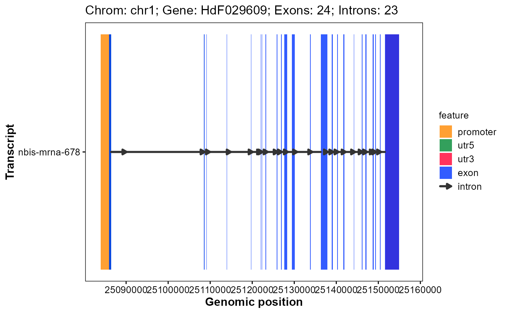

Plot gene structure (Promoter, 3'UTR, Exon, Intron, 5'UTR)
Source:R/plot_gene_structure.R
plot_gene_structure.RdPlot gene structure (Promoter, 3'UTR, Exon, Intron, 5'UTR).
Usage
plot_gene_structure(
gff_file,
format = "auto",
gene_id,
x_breaks = 10,
upstream = 2000,
downstream = 200,
feature_alpha = 0.8,
intron_width = 1,
arrow_count = 1,
arrow_length = 5,
arrow_unit = "pt",
promoter_color = "#ff8800",
utr5_color = "#008833",
utr3_color = "#ff0033",
exon_color = "#0033ff",
intron_color = "#333333"
)Arguments
- gff_file
Genomic structural annotation
GFF3/GTFfile path.- format
Format of GFF3/GTF file. ("auto", "gff3", "gtf").
- gene_id
Gene id same as GFF3/GTF. (necessary).
- x_breaks
X axis breaks number. (10).
- upstream
Promoter upstream (bp). (2000).
- downstream
Promoter downstream (bp). (200).
- feature_alpha
Elements alpha. (0.8).
- intron_width
Intron line width. (1).
- arrow_count
Intron arrow number bold. (1).
- arrow_length
Intron arrows length（pt). (1).
- arrow_unit
Intron arrow length unit. ("pt", "mm").
- promoter_color
Promoter color. ("#ff8800").
- utr5_color
5'UTR color. ("#008833").
- utr3_color
3'UTR color. ("#ff0033").
- exon_color
Exon color. ("#0033ff").
- intron_color
Intron color. ("#333333").
Examples
# Example GFF3 file in GAnnoViz
gff_file <- system.file(
"extdata",
"example.gff",
package = "GAnnoViz")
# Plot gene structure
plot_gene_structure(
gff_file = gff_file,
format = "auto",
gene_id = "HdF029609",
upstream = 2000,
downstream = 200,
feature_alpha = 0.8,
intron_width = 1,
x_breaks = 10,
arrow_length = 5,
arrow_count = 1,
arrow_unit = "pt",
promoter_color = "#ff8800",
utr5_color = "#008833",
utr3_color = "#ff0033",
exon_color = "#0033ff",
intron_color = "#333333"
)
#> Import genomic features from the file as a GRanges object ...
#> OK
#> Prepare the 'metadata' data frame ...
#> OK
#> Make the TxDb object ...
#> OK
